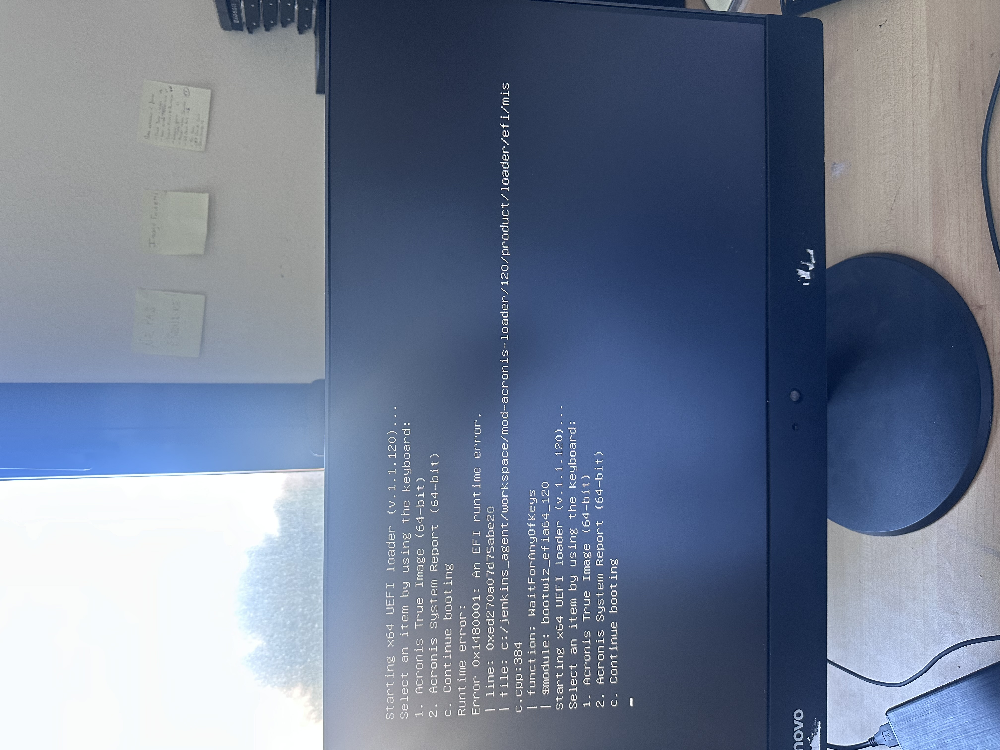
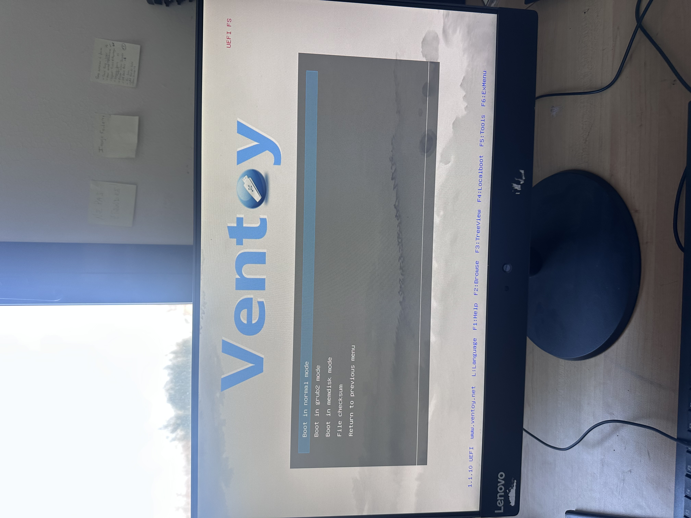
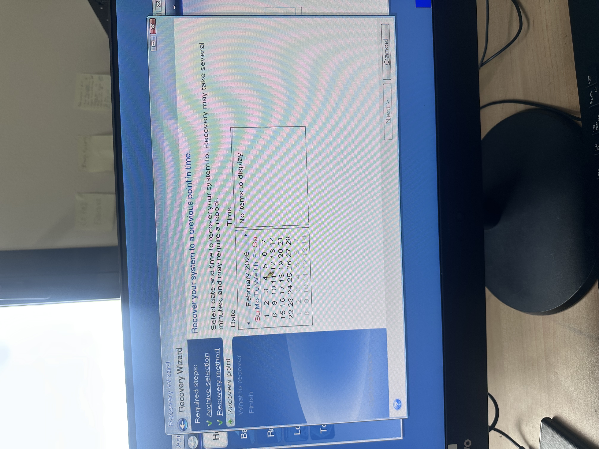

Étudiant en BTS SIO 2ème année, spécialisation SISR (Solutions d'Infrastructure, Systèmes et Réseaux). Deux ans de formation, deux stages en entreprise, des projets concrets — voici mon parcours.
Passionné par les infrastructures réseau et les systèmes d'information, je prépare mon BTS SIO option SISR avec pour objectif d'évoluer dans les métiers de l'administration système et réseau.
BTS Services Informatiques aux Organisations — option SISR. Session 2024–2026. Épreuve E5 : présentation du portfolio de compétences.
Administration des réseaux, configuration d'équipements (routeurs, switchs, pare-feux), gestion de serveurs Windows et Linux, support technique, sécurité des SI et virtualisation.
Deux stages : Lycée Georges Brassens à Évry et Mairie de Champs-sur-Marne. Immersion concrète dans les infrastructures réelles.
Intégrer un poste de technicien systèmes & réseaux ou administrateur infrastructure, avec une évolution vers l'ingénierie réseau ou la cybersécurité.
Deux immersions professionnelles qui m'ont permis de mettre en pratique mes compétences dans des environnements réels et variés.
Réalisation d'un audit physique et d'une cartographie des accès réseau afin de préparer le déploiement de la nouvelle infrastructure.
Mission polyvalente au sein du service informatique municipal. Gestion du quotidien technique, déploiement d'équipements et administration de l'infrastructure réseau, dont la masterisation de 40 postes sur le parc de 140.
Cette épreuve vise à évaluer chez la personne candidate l'acquisition des compétences décrites dans le bloc de compétences « Support et mise à disposition de services informatiques » (BLOC 1), à savoir :
Accédez au document officiel via le lien ci-dessous.
Ensemble des projets techniques majeurs réalisés durant ma formation BTS SIO SISR.
Installation et configuration complète d'un serveur Windows Server 2022 : Active Directory, DNS, DHCP, GPO et gestion des utilisateurs.
Déploiement et administration d'un serveur d'affichage dynamique. Planification structurée, tests d'intégration, accompagnement des utilisateurs.
📄 Voir la documentation du projet 📊 Voir le diagramme de GanttConfiguration d'un pare-feu Stormshield SNS : règles de filtrage, VPN, NAT/PAT. Mise en production avec tests d'intégration et d'acceptation.
Conception et développement d'un portfolio en ligne pour présenter mes compétences et projets. Intégration d'un profil LinkedIn professionnel pour optimiser ma présence numérique.
Mise en œuvre d'une stratégie de veille informationnelle régulière. Utilisation d'agrégateurs RSS, flux techniques, suivi des évolutions du secteur SI.
Projets concrets menés lors de mes deux stages, démontrant l'application des compétences en situation réelle.
Dans la perspective d'une refonte de l'architecture réseau du lycée, j'ai été chargé de réaliser un audit physique exhaustif des équipements de connectique. Ce travail préparatoire était indispensable pour permettre à l'équipe technique de planifier ses futurs déploiements.
📊 Voir la cartographie réseauDéploiement d'images système sur 40 postes (parc de 140). Création de l'image master, déploiement par lots, jonction AD, application des GPO et recette utilisateurs.



Accueil et traitement des demandes des agents municipaux via GLPI. Résolution d'incidents N1/N2, orientation des demandes complexes, suivi des tickets et satisfaction utilisateurs.
📄 Voir le registre d'interventionsInstallation et configuration d'équipements réseau au sein de la mairie. Mise en service de switchs, configuration des ports, tests de connectivité et mise à jour de la documentation réseau.
📄 Voir la documentation CPL DevoloGreen IT — Informatique durable : L'ensemble des pratiques, technologies et stratégies visant à réduire l'impact environnemental du secteur informatique. Cela comprend l'optimisation énergétique des équipements et des data centers, la gestion responsable des déchets électroniques, la virtualisation des ressources, et la promotion d'une infrastructure IT plus écologique et durable.
Analyse prospective des impacts de l'IA sur l'environnement à l'horizon 2025.
Publication de référence sur l'adoption et les usages des technologies numériques en France.
Recommandations et bonnes pratiques pour un numérique responsable au sein des collectivités.
Rapport d'orientation sur les futurs de la fonction numérique et les stratégies de déploiement.
Conseils pratiques et gestes quotidiens pour un usage plus sobre et responsable du numérique.
Le Référentiel Général d’Écoconception de Services Numériques (v. 2024), le cadre officiel pour un numérique durable.
Compétences acquises lors de ma formation et de mes stages, évaluées en contexte professionnel réel.
Disponible pour échanger autour de mon parcours, de mes projets ou pour toute opportunité professionnelle.